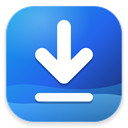

Nahr
Download & Media Manager
Checking…
⬇ Video
♪ Audio (MP3)
Allow Browser Download (30s)
Loading…
Hold Alt while clicking a link—or use "Allow Browser Download (30s)"—to let Chrome download protected files directly.